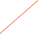

Run Control


Sub Runs
A run can be broken up into sub runs if desired. To start a sub run boundary, push the “End Sub Run” button. This will insert a run record into the data stream with the “end sub run bit” set and put the run into “Maintenance Mode” if it isn’t already. Changes can then be made to hardware as desired. Data will continue to be taken between sub runs. When ready to resume normal running, push the “New Sub Run” button. The “Maintenance Mode” returned to the original state, the run number will be incremented by a tenth, a run record will be inserted into the data stream with the “start sub run bit” set, and the run will continued.
Run Types File
The run type bits can be labeled by providing a file with the following format (example taken from the NCD experiment):
1,NEUTRINOOrca Help
2,SOURCE
3,CALIB
4,NCD
5,SALT
6,POISON
7,PARTIAL FILL
8,AIR FILL
9,D2O
10,H2O
11,UC BIT
12,TRANSITIONAL
13,SOURCE MOVING
14,COMP. COILS
15,ECA
16,DIAGNOSTIC
17,SUPERNOVA
18,PMT MAINTENANCE
19,PCA
20,EXPERIMENTAL
21,D20 CIRC.
22,BUBBLERS
23,S. L. ASSAY
The format is just a comma separated list of bit numbers and the bit names.
Run Scripts
It is possible to select a script to automatically run before the run is started and just before it is stopped. The return value of the start up script must be non-zero for the run to be allowed, a return value of zero will cause the run startup process to be aborted. The return value of a shut down script is ignored. The scripts selected here are independent of the scripts selected via the popup above the run start/stop buttons.
Scripts that are selected in the run control dialog, either via the popup above the run start/stop buttons or if selected via the ‘At Start’ popup button can place custom data into the raw data header.
Data Format
The run control object puts out a data record at the start and the end of every run, and a heart beat record every so often. For a heart beat record the time is the number of seconds until the next heart beat. Otherwise it is the run start time or the run stop time. This record is a fixed length record with the following content:
xxxx xxxx xxxx xxxx xxxx xxxx xxxx xxxx
^^^^ ^^^^ ^^^^ ^^------------------------ RunControl ID (from header)
-----------------^^ ^^^^ ^^^^ ^^^^ ^^^^-- length (fixed at 4 longs)
xxxx xxxx xxxx xxxx xxxx xxxx xxxx xxxx
^^^^ ^^^^ ^^^^ ^^^^--------------------- sub run number
--------------------------------^------- 1==Start subRun record
---------------------------------^------ 1==End subRun record
-----------------------------------^---- 1==heart beat record
------------------------------------^--- 1==Was a remote control run
-------------------------------------^-- 1==Was a quick start run
--------------------------------------^- 1==Run Started, 0==Run Stopped
xxxx xxxx xxxx xxxx xxxx xxxx xxxx xxxx Run Number
xxxx xxxx xxxx xxxx xxxx xxxx xxxx xxxx UT time or heart beat time
Run Control Using ORCAScript
Here is an example script that will do ten consecutive 30 second runs:
function main()
{
rc = find(ORRunModel,1);
//require that any runs already in progress be stopped
if([rc isRunning]){
[rc stopRun];
waituntil(![rc isRunning]);
}
[rc setTimedRun:NO]; //this script will control the duration
for(j=0;j<10;j++){
//here we could change parameters if, for example, we
//wanted to ramp a threshold on a card or something
[rc startRun];
waituntil([rc isRunning]);
sleep(30);
[rc stopRun];
waituntil(![rc isRunning]);
}
}
Run Control in an ORCA Process
You can link run control into a process bit with the following definitions:
chan 0 -> True if run stopped
chan 1 -> True if running
chan 2 -> True if run is starting (not likely you’ll actually see this state)
chan 3 -> True if run is stopping (not likely you’ll actually see this state)
chan 3 -> True if run is between subruns
ORCA’s run control object is control of starting, stopping, and timing data runs.
The run number is shown here if not in the offline mode
Opens/Closes a drawer that lets you set various run types. One run type, the Maintenance run type is reserved and allows some parameters to be changed while a run is in progress
Opens/Closes a drawer that lets you set the run number and the location of the run number file. A run number file must be specified in a writable location
Offline mode will NOT store data to disk or dispatch data. But you will be able to collect and view histograms and waveforms.
If checked, some initialization steps will be skipped to minimize the time it takes to start the run.
If a run is in progress, a new run will restart a run with a minimum of dead-time. Some initialization steps may be skipped.
In remote mode, all controls are disabled and control is only possible by receiving command from a remote host.
If this symbol is visible, you are in the offline mode. Data is NOT being stored or sent.
Run Number Drawer
Specify where to store the run number file.
Run Types Drawer
This drawer pops out when you click the 'Run Type...' button above.
Set the run number to a specific value. Warning -- there is no way for ORCA to check if you new run number has not been used before.
The maintenance bit is special and can be renamed. If checked certain items are unlocked while runs are in progress.
Labels for the run types can be set by providing a label definitions file.
Run types can be named to uniquely identify runs. The bit mask formed here is written out in the data header.
Open the run script editor. Disabled if no scripts selected for running

Select from existing run scripts in the configuration
This repeat is ONLY for the timed run option. Run restarts may be requested from other objects .. i.e. DiskObject

Opens/Closes the run scripts drawer
Selects a script from the Run Script drawer that will be run just before the start of run

Run Scripts Drawer
This drawer pops out when you click the 'Scripts...' button above.
Drag Run Scripts into this list. They can then be selected in the main dialog to run just before the run is started. The name of the script will be used here. Usually used to set the run type mask and/or do some special hardware setup or initialization.
Sub-run control. See below for more info.